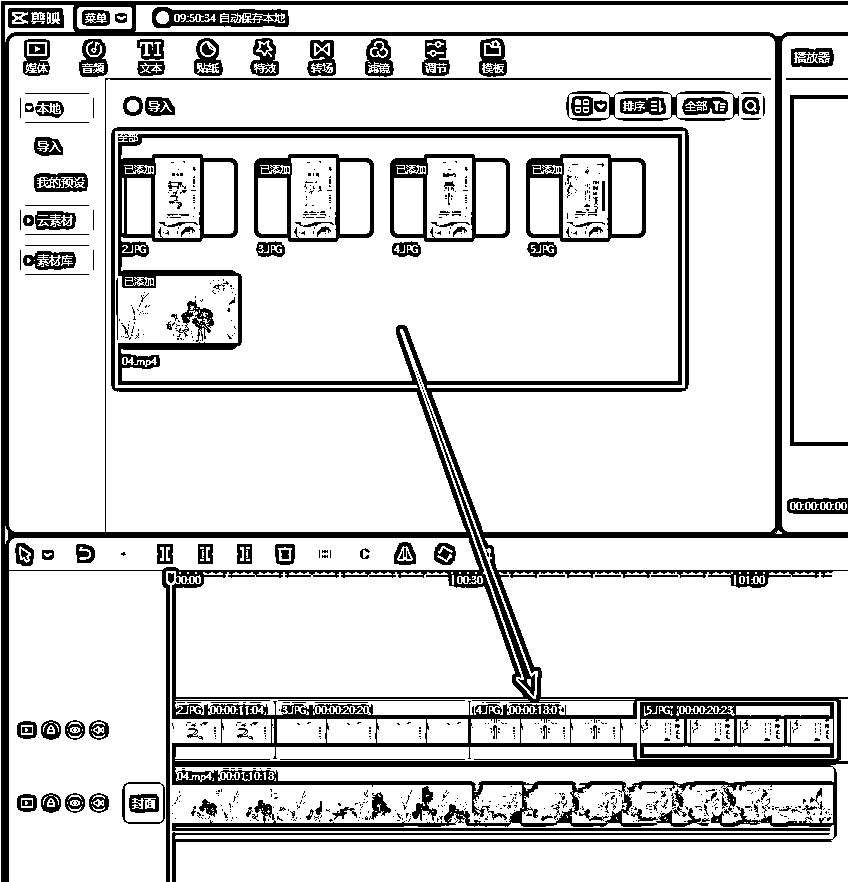
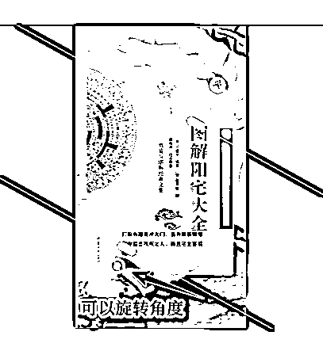

来源：https://lg8bbsytxl.feishu.cn/docx/DXJUdP4tzoXDjXxTa2kcFnEBnEf
2023年9月14日更新视频版教程：
首发生财有术知识星球：https://t.zsxq.com/12BipfnkM
视频中提到的两个小工具：
大家好，我是从小就很帅，目前在做短视频带货项目，这个项目的关键点就是“去重”和“批量”，视频去重和批量剪辑技术奇杰大佬分享过，可谓是生产效率提高不止一两倍，今天给大家分享的是利用剪映的蒙版功能去重，属于这项技术给自己带来的一点迭代。

不管是图片，还是视频，比例都调整成9：16。
这里我还用到自定义抠像，根据素材而定，如果素材本身符合自己要求，就不需要抠像。
自定义抠像视频演示：
蒙版使用视频演示：
蒙版模块里有线性、镜面、圆形等选项，大家根据图片需重点展示的部分选择和使用。

同样的图片，还能根据旋转的角度不同，达到不同蒙版效果，从而达到不同程度去重的效果。
所有图片处理完毕后，多复制几份，再把封面轨道上的视频素材多添加几个，再使用“导出静帧画面”，就能批量产出图片了。
视频演示：